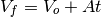
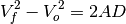
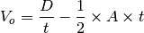
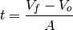
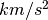
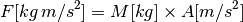
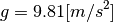
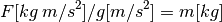

accelr – Acceleration Calculator¶
Analysis¶
There are a number of formulae in the introduction.
Force is Mass times Acceleration.
Velocity is acceleration times time. Final Velocity depends on starting velocity.

Distance is velocity times time; which is acceleration squared.

Also, this.

We can solve for , .
Given D, t and A:

Given V_f, V_o and A:

Implementation¶
hamcalc.math.accelr – Acceleration Calculator
These are two Solvers for acceleration and force problems.
Here are some test cases
>>> from hamcalc.math.accelr import force, accel
>>> accelr.force( m=12000, a=-2.5 )
{'a': -2.5, 'm': 12000, 'f': -30000.0}
>>> accelr.force( m=12000, f=30000 )
{'a': 2.5, 'm': 12000, 'f': 30000}
>>> accel( d=50, t=6, v_o=2, a=-.25 )
{'a': -0.25, 'v_f': 0.5, 'v_o': 2, 'd': 50, 't': 6}
- hamcalc.math.accelr.accel(**kw)[source]¶
Solve Acceleration problems.
Some combination of a, d, t, v_o and v_f must be provided. The others will be deduced.
Parameters: - d – Displacement (in m)
- t – Time (in seconds)
- v_o – Velocity at START
- v_f – Velocity at END
- a – Acceleration (m/s^2)
Returns: Dictionary with all values.
Legacy Introduction¶
ACCELERATION by George Murphy VE3ERP
This program calculates force of acceleration using these equations:
F=MA, where Force = Mass x Acceleration.
d=vot+½at²
vf=vo+at
vf²-vo²=2ad
where d=displacement, vo=original velocity, vf=final velocity, t=time in
seconds and 'a' is a constant calculated by the program.
Force of acceleration is calculated in kilogams and Standard Gravitys (g's).
Legacy Output¶
ENTER: Mass of moving object in kg? 12000
ENTER: Displacement in metres ? 50
ENTER: Duration of notion in seconds ? 6
ENTER: Velocity at START of acceleration (metres/second)? 2
ENTER: Velocity at END of acceleration (metres/second)? .5
ACCELERATION CALCULATION
Mass of moving object (kilograms)..M= 12000.000
Displacement (metres)..............D= 50.000
Duration of motion (seconds).......T= 6.000
Start velocity (metres/second)....Vo= 2.000
End velocity (metres/second)......Vf= 0.500
Acceleration constant (m./sec.)....A= -0.250
Acceleration force (kilograms).....F= -3000.000
Force (standard gravitys)............ -305.915
(Standard gravity <g-force> is 9.80665 metres/second²).
Legacy Quirks¶
There are several quirks in this program.
First, the legacy program conflates two problems.
- Computing in units of  (newtons) and gravities.
- Solving Velocty, Acceleration, Time and Distance.
We can trivially strip away part 1 as a separate function that returns F values given M and A.
After this, we’re left with part 2, which should be a Solver that derives one of the acceleration-related values (V_o, V_f, D, A or t) from the others.
Actually, the program doesn’t solve for anything. No value can be meaningfully omitted.
Line 390 effectively requires all inputs to be non-zero.
390 IF M*A*D*T*VO*VF THEN GOSUB 410:GOTO 470
The value of A is the only one computed. Line 370 handles that.
370 IF VO*VF*T THEN A=(VF-VO)/T
If we assume that line 390 is somehow incorrect, then lines 420-450 show an intent to solve for unknowns.
420 IF D=0 AND VO*T*A THEN D=VO*T+0.5!*A*T^2
430 IF VF=0 AND VO*A*T THEN VF=VO+A*T
440 IF VO=0 AND VF*A*T THEN V0=VF-A*T
450 IF M*D*T*VO*VF*A THEN F=M*A:GOTO 470
This looks like it can solve for D or V_f, V_o. All three require A, however, which is only computed from V_f, V_o and T on a previous line.
So, the only thing this can actually solve for is D. And line 390 prevents that.
Second, the “Acceleration Force” is in newtons, not kilograms.
Third, omitted values will have an input value of zero. Using a starting or final velocity of zero makes the value appear to be omitted, when it’s actually supplied as zero.
The “part 1”, force calculation, raises a further question: what’s the “Force (standard gravitys)” output?
Let’s include the units.



This appears to be an equivalent mass sitting on the surface of the earth.